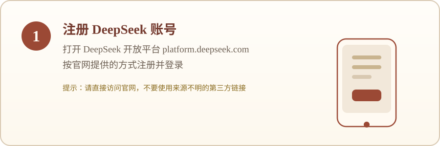
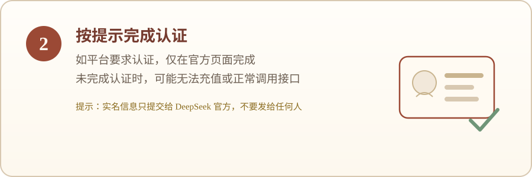
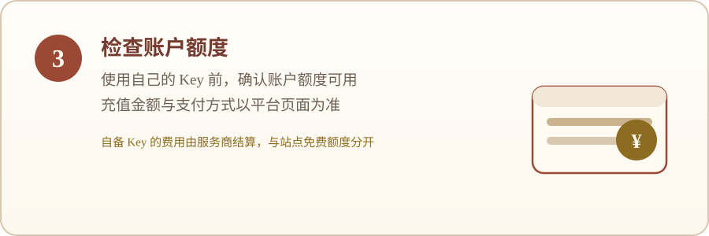
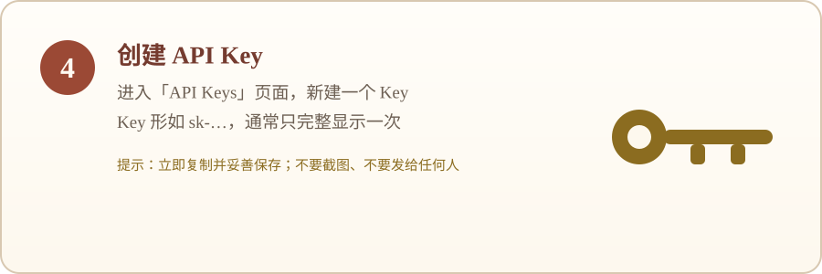
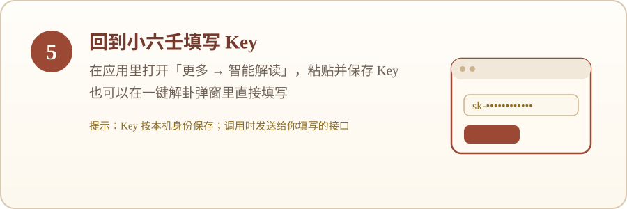

JI HENG · GUIDE
获取 DeepSeek API Key
想用自己的接口解读，可以在 DeepSeek 开放平台创建 API Key，再回到玑衡填写。本页介绍账号准备、额度检查、Key 创建与保存。
是否需要 Key：排盘、记录、主题和 AI 提示词生成与复制不需要 Key。未填写 Key 时，只有站点开启免费服务且额度可用，才能直接解读；可用次数以解卦页面显示为准。自备 Key 的费用与限额由服务商决定。
操作步骤
-
1. 注册 DeepSeek 账号

打开DeepSeek 开放平台，按官网提供的方式注册并登录。
请直接访问官网，不要使用来源不明的第三方链接。
-
2. 按提示完成认证

如平台要求账号或实名认证，请按当前页面提示完成。认证方式与适用要求可能调整，不以本页图示作为固定流程。
认证资料只提交到官方页面，不要发送给他人或本项目维护者。
-
3. 检查账户额度

使用自己的 Key 时，先确认账户额度可用；计费、余额与充值方式以平台页面为准。可查看官方计费说明。
自备 Key 的调用费用由你与服务商结算，本项目不参与分成；本站免费额度是另一种调用方式，不使用你的 Key。
-
4. 创建 API Key

进入「API Keys」页面，新建一个 Key。Key 形如 sk-…，通常只完整显示一次。
请立即复制并妥善保存；不要截图，也不要发给任何人。
-
5. 回到玑衡填写

在应用里打开「更多 → 智能解读」，粘贴并保存 Key；也可以在一键解卦弹窗里直接填写。
保存后，Key 按当前身份保存在本机浏览器；关闭标签页不会清除。自备 Key 的请求直接发往你填写的接口，请确认该地址可信。
安全提醒
- API Key 是接口访问凭据：请妥善保管，不在共享设备上持久保存。
- 不要截图、发到群里，或粘贴到公开页面、反馈和第三方工具。
- 如果怀疑泄露，请立即到 DeepSeek 平台删除该 Key 并新建一个。
- 维护者不会要求你发送 Key。调用时会将 Key 发送给你配置的接口；不要填写不可信的接口地址。
- 停止使用时，可在“更多 → 智能解读”清空 Key 并保存；更换设备前请自行备份重要卦例，备份不包含 Key。
费用与边界
- 自备 DeepSeek Key 的调用按平台规则计费，与本站免费额度分开；不对可用额度、响应速度或解读结果作保证。
- 留意平台的余额与用量记录；如有提醒功能，可按需要设置。
- 本页仅为操作参考，不构成对 DeepSeek 服务的推荐、担保或背书；请以其官网当前页面为准。
常见问题
- 提示 Key 无效，或没有额度？
- 先核对 Key 是否完整、接口地址和账户额度。认证失败时检查 Key；余额不足时查看平台账户。不要仅因网络超时就删除 Key，可稍后重试。若怀疑泄露，再到官网撤销并重新创建。错误说明见官方接口文档。
- 找不到「API Keys」页面？
- 以 DeepSeek 官网当前页面为准；入口名称或位置可能调整。
- 可以把 Key 发给你们帮我配置吗？
- 不可以。Key 只属于你，请勿发给任何人，包括本项目的维护者。
- 换设备后 Key 还在吗？
- Key 按当前浏览器与本机身份保存，不自动跨设备同步。关闭标签页不会清除；换设备、切换到未配置的身份或清理浏览器数据后，需要重新填写。
- 不填 Key 能用哪些功能？
- 排盘、主题、记录、导入导出和 AI 提示词生成与复制均可使用。站点开启免费服务且额度可用时，也能直接解读；额度用完或服务不可用时，可自备 Key。次数以解卦页面显示为准。
阅读边界：本站提供民俗文化体验、学习与记录参考，不替代医疗、法律、财务等专业意见，也不对现实结果作保证。